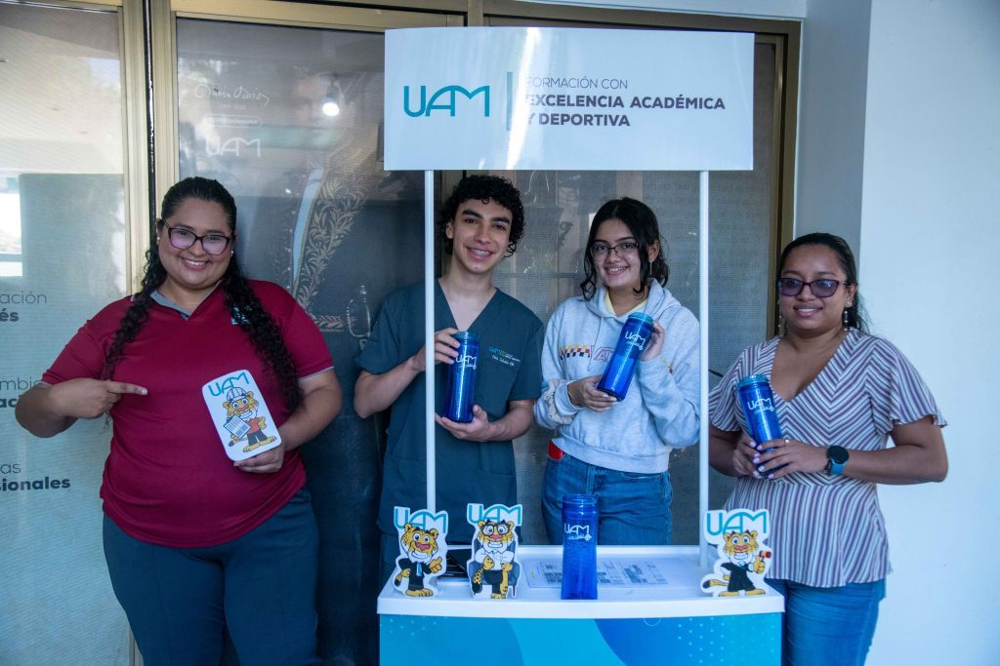
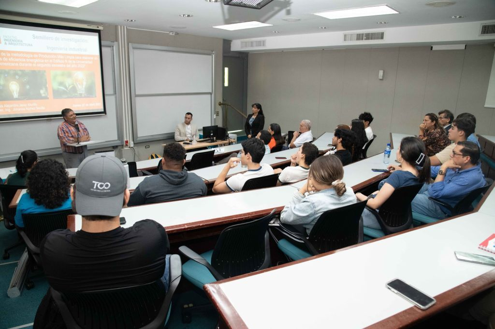
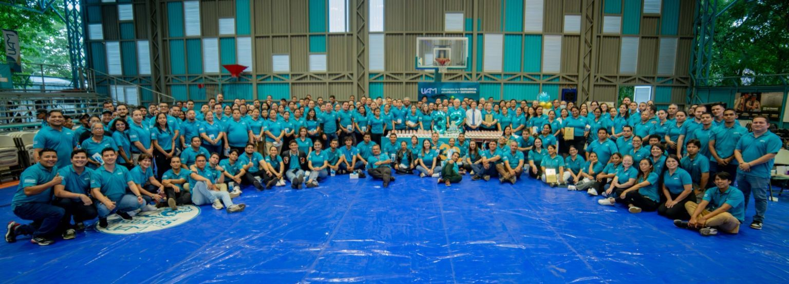

La Universidad Americana, UAM, fue fundada en 1992, por un grupo de catedráticos universitarios de vasta experiencia en el campo docente, investigativo y administrativo, con el propósito de contribuir al desarrollo de la Educación Superior en Nicaragua.
El Consejo Nacional de Universidades (CNU) aprobó oficialmente a UAM el 26 de noviembre de 1992, aprobación que confirió el debido reconocimiento nacional e Internacional.
Al día de hoy la UAM ofrece 19 carreras en grado y un amplio portafolio en programas de educación continua.
Misión: Formar líderes con visión global, emprendedores, con sólidos conocimientos científicos y principios humanísticos, capaces de aprender permanentemente para hacer frente a los desafíos de la sociedad contemporánea
Visión: Consolidarse como institución académica de clase internacional comprometida con el desarrollo humano equitativo y sostenible, con la eficiencia y competitividad de una organización privada de alto rendimiento


